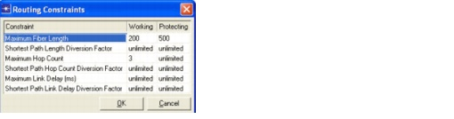
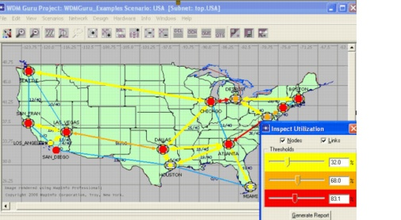

Additional Exercises
- After dimensioning the OCH layer for a specific traffic matrix, you can upgrade the design for another traffic matrix. This traffic matrix could represent traffic later in time, or additional traffic that needs to be established using a different protection mechanism. For each traffic matrix, a separate dimensioning action can be applied using the most appropriate protection mechanism for that traffic matrix. This allows you to accommodate traffic with different service levels within the same network.
- In the examples considered in this tutorial, the OTS, OMS, and OCH topologies are identical. This means that protected routing on the OCH layer results in working and protecting paths that are disjoint from the OCH layer down to the OTS layer. With the introduction of cable splitters (Edit > Open Object Palette) and fiber routes (Design > Fiber Routing...), you can create a network with different topologies at each network layer. In such a network, the Link Disjoint option becomes important. The routing and dimensioning algorithm take the shared risk link group concept into account down to the layer selected. For example, selecting OCH Link Disjoint results in a working and protecting path that are disjoint at the OCH layer, but these paths are not necessarily disjoint down to the OMS or OTS layer. To make sure that the working and protecting paths are disjoint to the physical layer in such a network, choose OTS Link Disjoint in the routing or dimensioning dialog box.
- In the examples in this tutorial, the routing or dimensioning algorithm always determines the routes. However, SP Guru Transport Planner lets you define routes. Therefore, select Import OTS Routes in the routing or dimensioning dialog box and specify the .csv file containing the routes. The routing or dimensioning algorithm then takes these routes into account. For a description of the file format, see the SP Guru Transport Planner User Guide.
- Even when the routing or dimensioning algorithm determines the routes, SP Guru Transport Planner still allows you to control the route. This is done by defining routing constraints. Select Network > Connection Browser, right-click on a connection and select Routing Constraints. In this dialog you can specify constraints that apply only to the selected connection. Repeat this step for each connection that you want to have constraints, and confirm each constraint by clicking OK in the Routing Constraints dialog box. When you're done, close the Connection Browser and select a design action (routing, dimensioning, and so on). The routing and dimensioning algorithm then searches the optimal route that satisfies the routing constraints of the connection. If the algorithm cannot find a route that meets the routing constraints, it does not set up a connection. See the figure below. The routing or dimensioning algorithm will search a working path shorter than 200 km and a protecting path shorter than 500 km for the given connection. Also, the number of hops of the working path has to be smaller than or equal to three. If SP Guru Transport Planner does not find a working path shorter than 200 km and shorter than 3 hops, the given connection is not set up and left unrouted.
- The Utilization Viewer allows visualizing the utilization of the nodes and the links in a layer of the network. Select Info > Inspect Utilization. In the Inspect Utilization dialog box, three levels of utilization can be defined. The links and nodes are colored according to the specified levels. The links and nodes reaching utilization level 1, 2, or 3 are colored in yellow, orange, or red, respectively. By using the toolbar buttons (DCL, OCH, OMS or OTS), the utilization can be visualized in the different layers. See the following figure. The link between Chicago and Detroit is red, which means that the utilization on this link is higher than 83.1percent. The link between San Francisco and Los Angeles is not colored, implying that the utilization on this link is lower than 32 percent. The utilization in node Houston lies between 32 and 68 percent. To generate a report containing link utilization information, click Generate Report in the Inspect Utilization dialog box.


